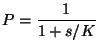

Paulsson, Berg, Ehrenberg (Uppsala)
Système à reponse graduée du type Michaelis-Menten :
|  | (16) |
Exemple (même que celui d'avant):
avec la particularité que le taux de R3 est proportionel au signal s.
Avec un signal constant le niveau de P depend de s selon une loi type Michaelis-Menten. La sensibilité est faible : une diminuation du signal deux fois n'augmente pas P plus que deux fois.
Lorsque le signal est bruité la sensibilité augmente (focalisation stochastique): une diminution de la moyenne du signal deux fois produit une augmentation de la moyenne de P plus de 3 fois.